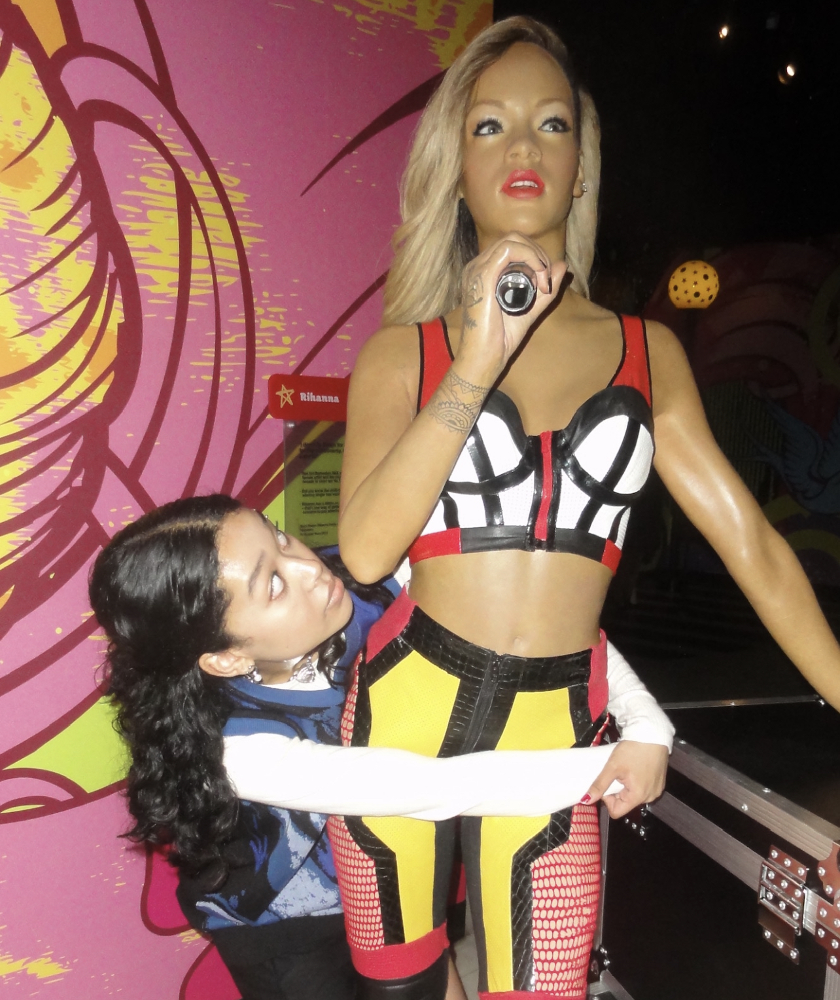

mia watanabe!
data science, 3rd year
Hi! I'm Mia. Outside of school, I love reading and music and horror movies.
I'm from the Central Valley (in California).
I'm a Scorpio, so my birthday is soon! I'm looking forward to the rest of the semester :-)
fav places to eat in berkeley!:
- 1. my apartment
- 2. u:dessert story
- 3. seoul hotdog

me and the bestie (100% not wax figure)
yummmmmmm!!!!!!!!!!
part two responses:
- Deconstructing apps by hierarchy, content, intent, and audience can aid in observing underlooked details of a product (including websites). Both the examples in the article and the apps on my phone show how design differs depending on the user’s goal.
- I found the sections “Hierarchy” and “Intent” the most interesting; both featured questions that made me rethink the design of some apps/websites, like what problem a product is designed to solve and how that impacts aesthetics.
- "How does the design guide your focus?"
- 7/10 (I liked the GIFs)